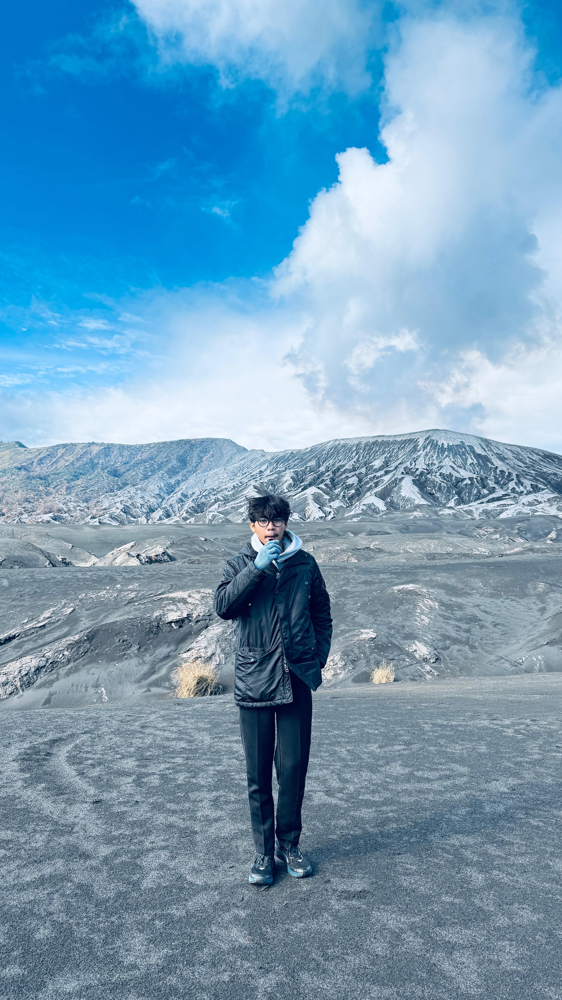

MAHASISWA TEKNOLOGI INFORMASI
Gunawan
Saya adalah mahasiswa aktif Program Studi Teknologi Informasi Universitas Brawijaya yang memiliki pengalaman dalam komunikasi, pelayanan pelanggan, serta manajemen acara.
Saya terbiasa bekerja dengan cepat, teliti, dan komunikatif melalui pengalaman sebagai MC, moderator, kepanitiaan, serta pekerjaan part-time. Saya memiliki etos kerja yang disiplin dan siap berkontribusi secara profesional, khususnya dalam pekerjaan part-time selama libur semester.
Keahlian
Public Speaking
Pelayanan Pelanggan
Kerja Sama Tim
Komunikasi Interpersonal
Manajemen Acara
Leadership
Administrasi Dasar
Problem Solving
Manajemen Waktu
Pendidikan
D3 Teknologi Informasi
Universitas Brawijaya
2025 - 2029